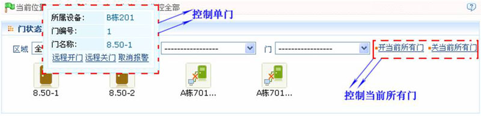
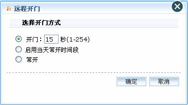
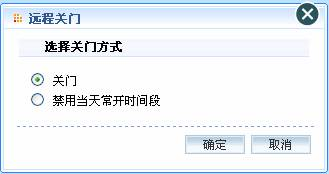
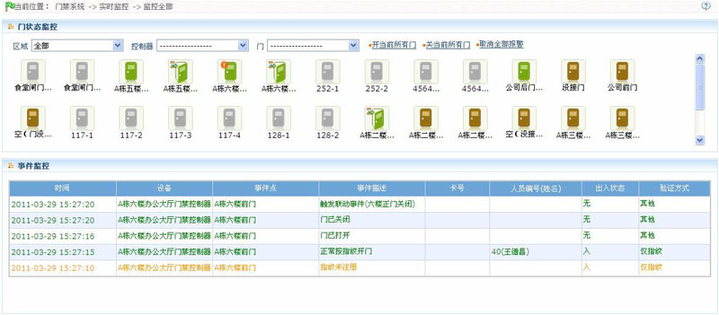
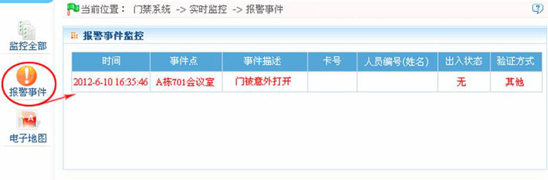
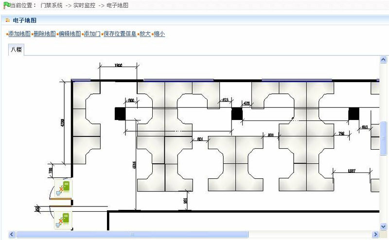

6.6 实时监控
实时监控系统内的门禁控制器所包含的门的状态以及实时事件，包括正常事件以及异常事件（含报警事件）等。
1、监控全部
系统默认首页显示监控当前用户权限范围内控制器的所有门，用户可以根据【区域】，【控制器】或【门】来对需要的一个（或多个）门进行有针对性的监控。
 备注：将鼠标移动到门图标上，将显示对应的（单个）门操作选择框，如下图所示：
备注：将鼠标移动到门图标上，将显示对应的（单个）门操作选择框，如下图所示：

-
 远程开门/关门：分为对单个门的控制和所有门的控制。
远程开门/关门：分为对单个门的控制和所有门的控制。 -
 对单个门控制时：直接将光标移至门的图标上，在弹出的对话框中单击【远程开门/关门】操作；
对单个门控制时：直接将光标移至门的图标上，在弹出的对话框中单击【远程开门/关门】操作； -
对所有门控制时：直接单击【开/关当前所有门】。
在远程开门时，用户可以在弹出的对话框中自定义开门的时长，系统默认15秒；也可以选择【启用当天常开时间段】，则系统设置的当天的常开时间段生效；也可以直接将门的当前状态设置为常开，此时门不受任何时间段的限制（相当于24小时常开），如下图所示：

如需将门关闭，需要先进行【禁用当天常开时间段】，以避免其他的常开时间段生效而开门，然后使用【远程关门】操作将门关闭，如下图所示：

 注意：对所有门控制时，如果远程开关门一直返回失败，请检查设备列表是否有太多当前断开的设备，如果有，请检查网络，否则操作无法进行。
注意：对所有门控制时，如果远程开关门一直返回失败，请检查设备列表是否有太多当前断开的设备，如果有，请检查网络，否则操作无法进行。
-
取消全部报警：一旦界面上出现有报警的门，系统会有警报声响起；实时监控页面上显示【取消全部报警】按钮，单击可取消当前界面上有报警事件的门所属控制器的报警，如果取消报警成功，系统中的警报声也会自动消失。
 说明：如果某个控制器上有多个门在同时报警，只需在界面对其中一个门进行【取消报警】操作就可以取消该门所属控制器的所有报警。
说明：如果某个控制器上有多个门在同时报警，只需在界面对其中一个门进行【取消报警】操作就可以取消该门所属控制器的所有报警。

门状态监控时，如果当前界面中门的数量<=64时，系统默认以图片的形式显示门，以进行门状态的监控。一旦超过64，系统将会自动以列表的形式显示。
鼠标放在某个门上时，会显示相关参数：所属设备、门编号、门名称，以及远程开门、远程关门、取消报警三个针对单个门的操作。各种图标表示状态如下：
图标 |
|
||||||
状态 |
门报警 |
联机状态下门关 |
联机状态下门开 |
未设置门磁 |
设备被禁用 |
门脱机状态 |
门开超时 |
人员照片显示：
如果实时监控时涉及到人员，而对应的人员又设置了照片，那么监控将会显示人员照片。人员照片上会显示事件名称、时间、以及人员的姓名。
事件监控：
系统自动获取监控到的设备事件记录，包括正常门禁事件和门禁异常事件（含报警事件）。报警事件用红色字标示，门禁异常事件中除报警事件之外的事件用橙色表示，正常事件绿色表示。
同时当事件监控界面第一次出现报警事件记录时，右上角会出现“发现报警事件”的提示，用户单击该链接后，系统将以打开新窗口（或者是标签页）的方式重定向到报警事件监控的界面。
当前事件监控界面最近的记录在最上面，使用户不需拖动滚动条就可以看到最新的监控记录。同时界面上最多显示50条记录。
如果右上角出现红色【发现报警事件】，则点击进入【报警事件】界面，用户可看到界面跳转之前【事件监控】中监控到的报警事件以及当前时间点之后的报警事件。
2、报警事件
报警事件的记录实际上是异常记录中的一部分，即异常记录中的报警事件记录。
报警事件监控只监控系统内获取到的报警事件。只能监控到进入到该界面的时间之后的报警事件。
报警事件监控列表如下图所示：

3、电子地图
在使用电子地图功能前，用户首先需要添加地图，添加成功后，用户可以在地图上进行添加门，放大、缩小地图（以及地图上的门）等操作。用户在移动门图标的位置以及改变地图或者门图标的位置后，可以通过保存位置信息的操作来保存当前的设置，以便再次访问时能够看到之前设置的状态。

添加、删除地图：用户可以根据需要添加或删除地图。
修改地图：用户可以修改地图名称、更换电子地图或者更换电子地图所属区域等。
调整电子地图（含门）：用户可以在地图上添加门，可以移除已存在门（右击门图标，点选“移除门”），以及调整地图以及门图标的位置（拖曳门图标）、大小（点击放大、缩小）等。
门状态实时监控：除要显示电子地图外，还需要显示事件监控（和门状态监控数据源一致，包括警报声等）。
门操作：将鼠标放在门图标上，系统会自动按门状态过滤并显示操作类型，用户可以进行远程开/关门、取消报警等操作。
权限控制：
（1）、新增地图时需要选择该地图所属区域。该区域与用户权限管理中的区域关联，即用户只能查看、管理权限范围内的地图。如果用户修改某个地图所属区域，将自动清空原有该地图上的门，需要用户重新添加。
（2）、管理员在新增管理用户时，可以通过分配角色的差别来控制界面上的操作，比如“保存门位置”，“放大”，“缩小”等。
（1）、用户在修改地图时，可以选择只修改地图名称而不修改地图路径，此时只需要将“修改路径”的复选框勾掉即可；
（2）、向地图上添加门时支持同时添加多个门，用户添加完毕后需要到地图上按照需要布局门位置，然后保存即可；
（3）、在调整门图标的位置时，特别是在进行缩小操作时，门图标上边距和左边距最小值均为5像素，一旦小于5像素，系统将提示用户；
（4）、系统建议添加地图的图片大小不超过1120px*380px。不同的客户端访问同一台服务器时，也会因客户端显示的分辨率以及浏览器的设置，而显示效果有所不同。
附：实时事件描述
1、正常事件
正常刷卡开门：指在“仅卡”验证方式下，具有开门权限的人员刷卡且验证通过后所触发的正常事件。
正常按指纹开门：指在“仅指纹”或者“卡或指纹”的验证方式下，具有开门权限的人员按指纹且验证通过后所触发的正常事件。
卡加指纹开门：指在“卡加指纹”的验证方式下，具有开门权限的人员刷卡并按指纹且验证通过后所触发的正常事件。
出门按钮开门：当门有效时间段内使用出门按钮开门时，触发该正常事件。
门常开时段内刷卡：指具有开门权限的人员在常开时间段内（含对单个门设置的门常开时段或者首卡常开设置的开门时段），以及通过远程开门常开的操作，门已处于打开状态时刷有效卡所触发的正常事件。
常开时间段内按指纹：指具有开门权限的人员在常开时间段内（含对单个门设置的门常开时段或者首卡开门（常开）设置的开门时段），以及通过远程开门常开的操作，门已处于打开状态时按有效指纹所触发的正常事件。
首卡常开（刷卡）：指在“仅卡”的验证方式下，具有首卡开门权限的人员在设定的首卡常开时间段内，门尚未打开时刷卡且验证通过后所触发的正常事件。
首卡常开（按指纹）：指在仅指纹或者卡或指纹的验证方式下，具有首卡开门权限的人员在设定的首卡常开时间段内，门尚未打开时按指纹且验证通过后所触发的正常事件。
首卡常开（卡加指纹）：指在卡加指纹的验证方式下，具有首卡开门权限的人员在设定的首卡常开时间段内，门尚未打开时刷卡并按指纹且验证通过后所触发的正常事件。
常开时间段结束：设置的常开时间段到，门将自动关闭，常开时间段包含了设置门的门常开时间段以及设置首卡开门时选择的时间段。
远程开门常开：指使用远程开门时选择常开让门处于常开状态时，触发的正常事件。
取消常开：刷五下有效卡或者远程关门取消当前门的常开状态时，触发该正常事件。
多卡开门（刷卡）：指多卡组合开门时，在“仅卡”的验证方式下，最后一张卡验证通过时所触发的正常事件。
多卡开门（按指纹）：指多卡组合开门时，在“仅指纹”的验证方式下，最后一个指纹验证通过时所触发的正常事件。
多卡开门（卡加指纹）：指多卡组合开门时，在“卡加指纹”的验证方式下，最后一次卡加指纹验证通过时所触发的正常事件。
紧急状态密码开门：指使用在当前门上设置的紧急状态密码（也称为超级密码）开门且验证通过后所触发的正常事件。
常开时间段开门：指对当前门设定了门常开时间段后，到达设定的开始时间时，门自动打开所触发的事件。
触发联动事件：当系统内设定的联动生效时，触发该正常事件。
取消报警：当用户对存在报警的门进行了取消报警操作，且取消报警成功时，触发该正常事件。
远程开门：当用户对某个门进行远程开门操作且开门成功时，触发该正常事件。
远程关门：当用户对某个门进行远程关门操作且关门成功时，触发该正常事件。
开启辅助输出：用户在联动设置中设定的联动动作，如果输出点地址选择了辅助输出点，动作类型选择了打开，则当该联动设置生效时，将会触发该正常事件。
关闭辅助输出：用户在联动设置中设定的联动动作，如果输出点地址选择了辅助输出点，动作类型选择了打开，则当该联动设置生效时，将会触发该正常事件；另外，用户使用【门设置】-【关闭辅助输出】操作关闭已经开启的辅助输出点时，也会产生该事件。
门已打开：当门磁检测到门已被正常打开时，触发该正常事件。
门已关闭：当门磁检测到门已被正常关闭时，触发该正常事件。
辅助输入点断开：当辅助输入点断开时，触发该正常事件。
辅助输入点短路：当辅助输入点短路时，触发该正常事件。
设备启动：设备启动时触发该正常事件，该事件不会出现在实时监控中，只能通过报表中的事件记录查看。
2、异常事件
刷卡间隔太短：当两次刷卡之间的间隔小于该门设定的刷卡间隔时间时，触发该异常事件。
按指纹间隔太短：当两次按指纹之间的间隔小于该门设定的刷卡间隔时间时，触发该异常事件。
门非有效时间段（卡）：当验证方式为“仅卡”或者时，具有当前门开门权限的卡，在设定的门有效时间段之外的时间刷卡所触发的异常事件。
门非有效时间段(指纹)：指具有当前门开门权限的人员，在设定的门有效时间段之外的时间按指纹所触发的异常事件。
门非有效时间段（出门按钮）：在设定的门有效时间段外按出门按钮，无法开门时产生此事件。
非法时间段：指具有当前门开门权限的卡，在门禁权限设定的时间段之外的时间刷卡所触发的异常事件。
非法访问：已注册的卡，尚未在当前门设置门禁权限时刷卡所触发的异常事件。
反潜：当系统内设定的反潜规则生效时，触发该异常事件。
互锁：当系统内设定的互锁规则生效时，触发该异常事件。
多卡验证（刷卡）：多卡组合开门时，最后一次验证之前的刷卡验证（无论通过与否），触发该事件。
多卡验证（按指纹）：指在仅指纹或者卡或指纹验证方式下，多卡组合开门时，最后一次验证之前的指纹验证（无论通过与否），触发该事件。
卡未注册：指当前卡号未在系统内注册时，所触发的事件。
指纹未注册：指当前指纹未在系统内登记或者虽已登记但未同步到设备中，所触发的事件。
门开超时：门被打开后超过延时时间后检测门磁，如果门没有关上，触发该事件。
卡已过有效期：当已设置门禁有效时间的人员，在结束门禁日期后刷卡无法验证通过，触发该事件。
指纹已过有效期：当已设置门禁有效时间的人员，在结束门禁日期后按指纹无法验证通过，触发该事件。
密码错误：使用卡加密码验证方式或者胁迫密码、紧急密码开门时，密码验证错误触发该事件。
常开时间段无法关门：指当前门正处在常开状态，无法通过远程关门中的【远程关门】操作关门时所触发的异常事件。
3、报警事件
胁迫密码开门：指使用在当前门上设置的胁迫密码开门且验证通过后所触发的报警事件。
门被意外打开：指在正常事件（如门禁权限的人员刷卡开门、密码开门、门常开时段开门、远程开门、联动设置的开门）以外的情况下，使得门磁检测到门被打开的情况，均为门被意外打开。
胁迫指纹开门：指人员使用已经登记的胁迫指纹开门时所触发的报警事件。